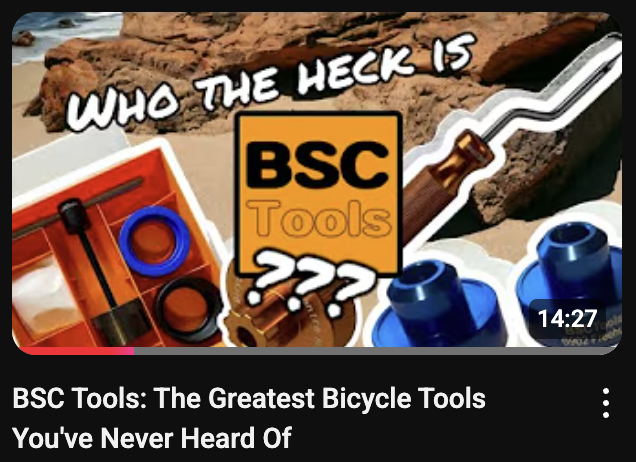
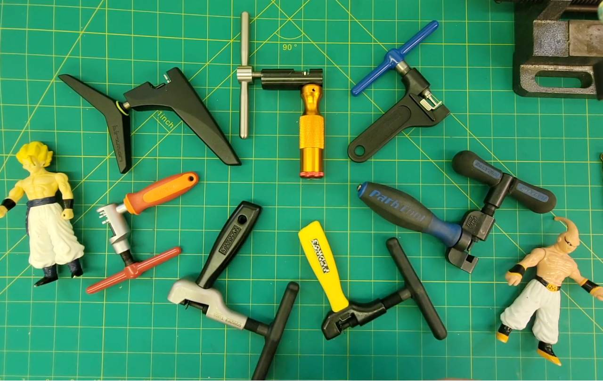
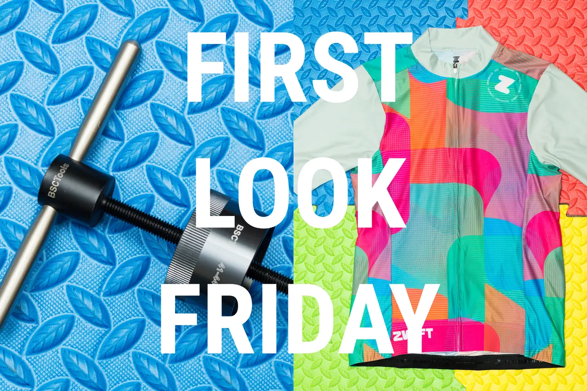
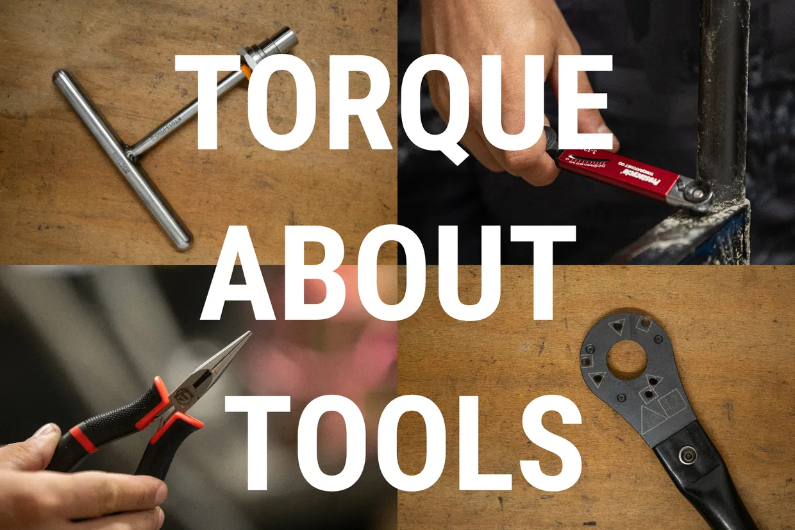
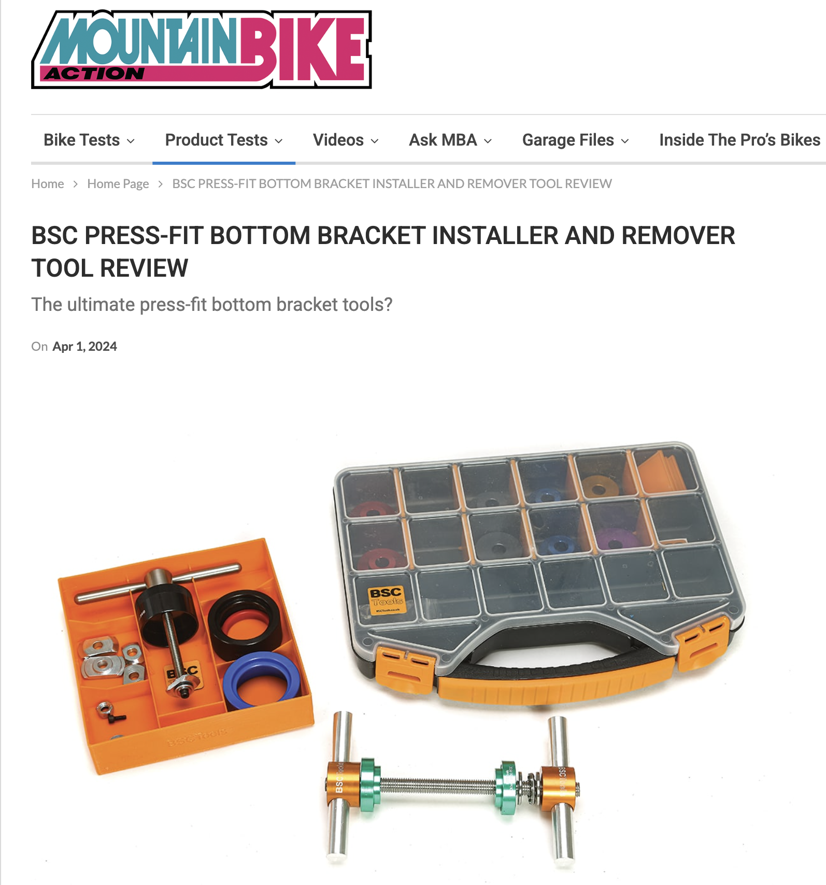
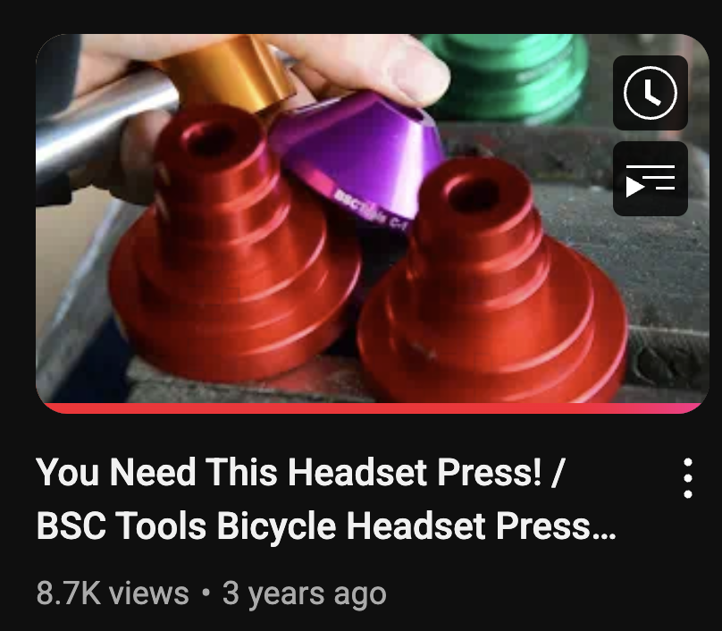
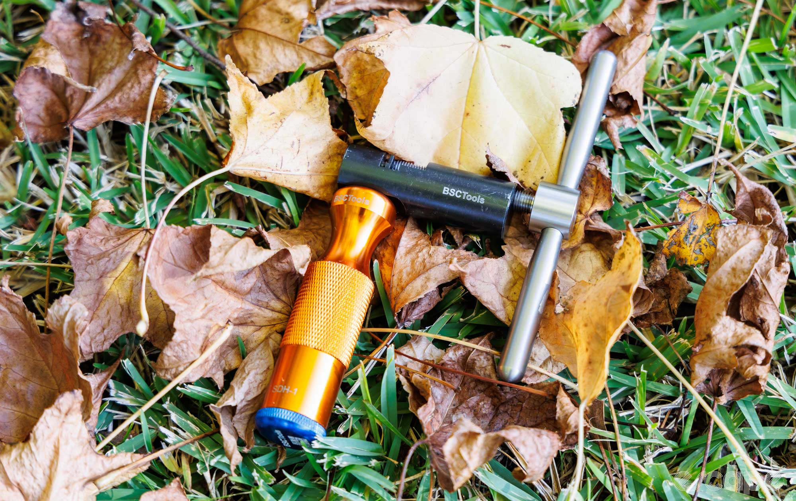
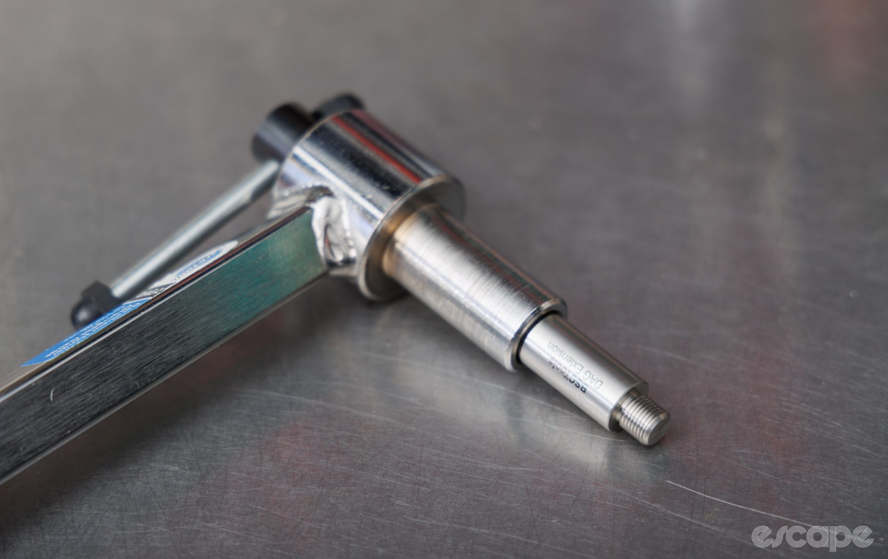
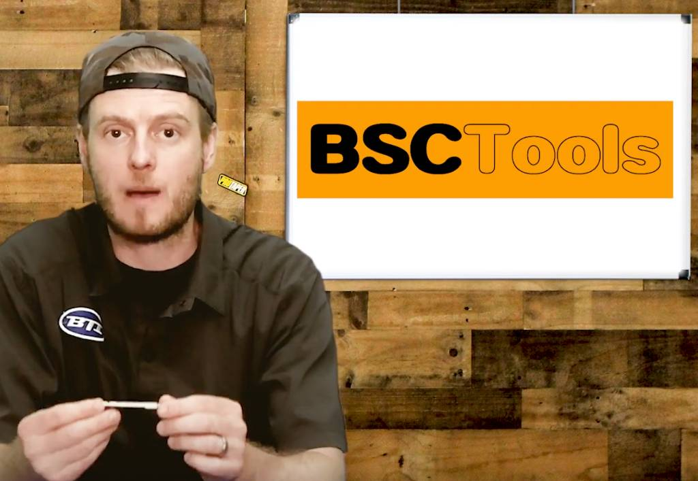
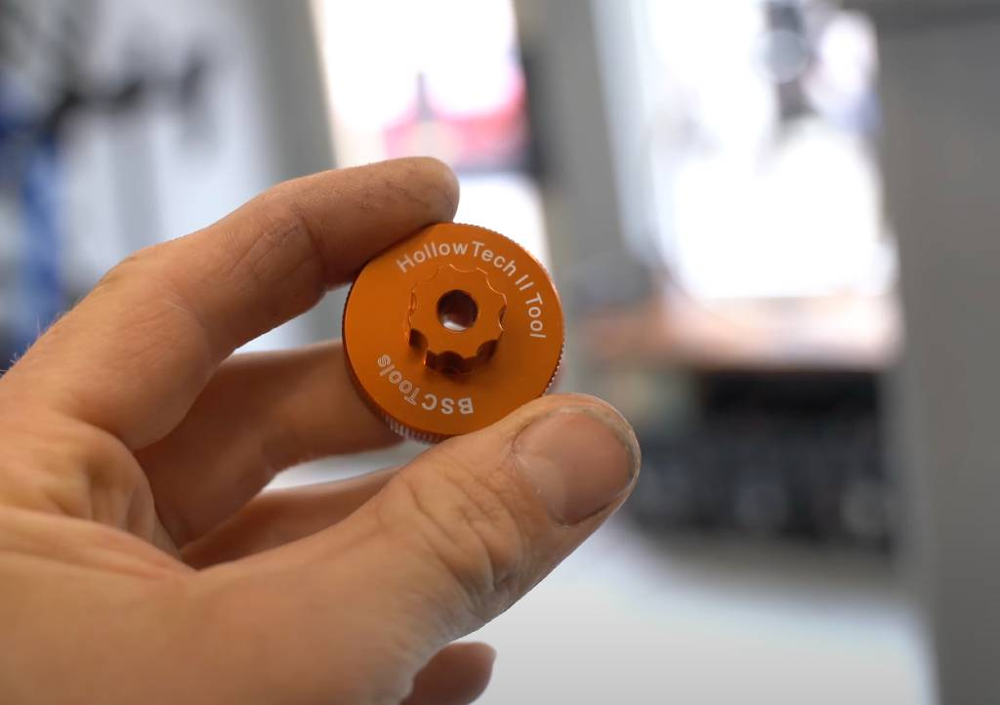

{kind=link}

Neutral Support News - BSC Tools: The Greatest Bicycle Tools You've Never Heard Of
Click to watch -- Neutral Support News - BSC Tools: The Greatest Bicycle Tools You've Never Heard Of
{kind=link}

Neutral Support News - BSCTools in Ten Companies that ACTUALLY CARE about Professional Bike Mechanics
{kind=link}

Bike Radar Review -BSCTools Pressfit Bottom Bracket Remover
Click to read -- Bike Radar Review - Pressfit Bottom Bracket Remover
{kind=link}

Bike Radar Review - BSCTools Pro Cannondale Crank Remover
Click to read -- Bike Radar Review - BSCTools Pro Cannondale Crank Remover
{kind=link}

Mountain Bike Action Review - BSCTools Pressfit BB Remover and Installer
Click to read -- Mountain Bike Action Review - BSCTools Pressfit BB Remover and Installer
{kind=link}

MonkeyShred - BSCTools Headset Press Review
Click to watch -- MonkeyShred - BSCTools Headset Press Review
Neural Support News - Review BSCTools Chain Tool - Top Rated
Click to watch -- Neural Support News - Review BSCTools Chain Tool - Highly Rated
{kind=link}

Escape Collective - Dave Rome - BSCTools Chain Tool Review
Click to read -- Escape Collective - Dave Rome - BSCTools Chain Tool Review
{kind=link}

Escape Collective - Dave Rome - BSCTools Dag Extension Review
Click to read -- Escape Collective - Dave Rome - BSCTools Dag Extension Review
{kind=link}

Beady Eye Network - BSCTools Spoke Nipple Drivers and ERD Rods
Click to watch -- Beady Eye Network - BSCTools Spoke Nipple Drivers and ERD Rods
{kind=link}

sebibuchs Review - BSCTools Hollowtech II Tool
Click to watch -- sebibuchs Review - BSCTools Hollowtech II Tool